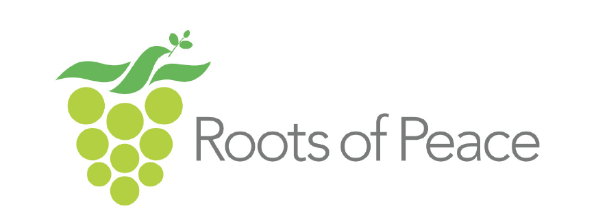
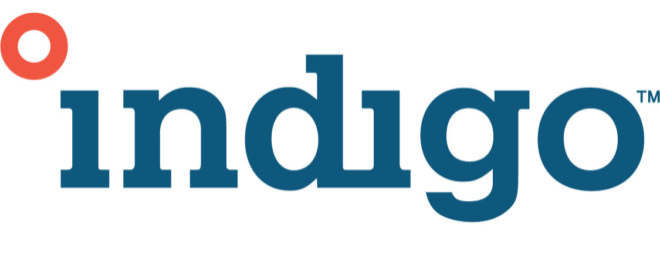

Kudzai Mutembwa's Space
Hi 👋🏾, and welcome to a window into my career journey. My name is Kudzai Mutembwa I am an execution-focused professional looking to build a long-term career in Technical Product Marketing.
My trajectory has been defined by a deliberate push out of my comfort zone to master different facets of the global business and tech landscapes. I completed my undergraduate degree in International Economics, Management and Finance from Bocconi University in Milan, Italy, before moving to Boston, MA, where I earned a Master's in International Affairs and a Master of Science in Computer Science from Northeastern University. This unique combination allows me to sit directly at the intersection of complex software code and commercial business mechanics. Rather than entering the field as a traditional marketer, I am intentionally seeking a graduate-level opportunity where I can anchor my computer science baseline and learn tech-driven Go-To-Market (GTM) strategy from the ground up.
I am driven to help teams translate sophisticated technology into impactful market presence through:
- Audience and market research
- Data driven strategy
- Cross-functional project coordination
- Internatal and external partner engagement
I bring a unique blend of technical literacy, professional maturity, and drive to execute and learn every single day.
Experiences
My professional experience crosses a few different worlds, spanning deep technology, commercial economics, and project delivery. I built my early analytical foundations with internships at Bloomberg and Morgan Stanley before moving into software product management at iRobot and strategy consulting at Damipa. Working across corporate finance, consumer robotics, and international development taught me how to adapt quickly to new spaces. Across all of these roles, my main focus has always been the same: looking at complex data or software architecture and figuring out how to translate it into clear, effective strategies that drive success.

Roots of Peace
Summer International Development Associate
Washington, D.C.
2018

Indigo Agriculture
International Business Analyst
Boston, MA
2019
Leadership Global
Research and Strategy Associate, Africa
Washington, D.C.
2020
-1.jpg)
iRobot
Product Manager
Boston, MA
2022
Northeastern University
Graduate Teaching Assistant HCI
Boston, MA
2022
Damipa Consulting
Strategy and Research Lead
Boston, MA/Harare, Zimbabwe
2024 - Present
Education
Northeastern University Computer Science: I chose to pivot into a rigorous Computer Science program because I wanted to understand technology from the source code up. This degree gave me the technical baseline to understand software development lifecycles, data systems, and human-centered AI logic. I am not a marketer who stands outside the engineering team looking in; I speak the language of developers and understand the structural architectural trade-offs behind the products I market. (Bonus: Graduate Certificate in Agile Project Management, 2024)
Northeastern University International Affairs: Focusing on international public policy forced me to look at macro-level data and complex global ecosystems. This is where I mastered structured qualitative research, policy frameworks, and the art of navigating diverse, high-stakes stakeholder environments—skills that translate directly into analyzing massive market trends and aligning global product teams.
Bocconi University International Economics, Management and Finance: My foundation is rooted in commercial strategy and economic reasoning from one of Europe's top business institutions. This is where I learned how markets operate, how consumer psychology drives demand, and how to analyze financial structures. It gave me the business acumen that keeps my product thinking grounded in real-world profitability and adoption.
Graduate Certificate in Agile Project Management
Northeastern University, Boston, MA
2023-2024
Relevant Courses: Agile Lean Product Development, Advanced Principles of Agile Project Management
Masters in Computer Science (ALIGN)
Northeastern University, Boston, MA
2020-2023
Relevant Courses: Human Computer Interaction, Object Oriented Design, Database Management Systems, Algorithms, Global Intelligent Interfaces
Masters in International Affairs
Northeastern University, Boston, MA
2017-2019
Relevant Courses: Political Economy, Economic Institutions and Analysis, Public Management and Ethics Administration
Bachelors in International Economics, Management, Finance
Bocconi University, Milan, Italy
2012-2017
Relevant Courses: Management, Marketing, Organization Theory, Finance
Projects
I have been fortunate enough to work on some very exciting projects in my brief time working in technology. From UX research and ideating for apps to researching the efficacy of AI moderation in Virtual Reality, these projects have allowed me to gain invaluable UX and software skills across the technology space.

MassPass App
I worked in a group of 3 to create an app from ideation to execution using all tenets of product design, user research, product management and human computer interaction. The app was designed to allow users to carry a digital copy of their COVID vaccination cards, upload test results, schedule tests, as well as vaccine appointments. Link: Contextual Analysis
Audio Visual
Technical project that focused on creating a business case for a client's non-profit yoga business. Developed recommendations based on the business needs of the client and presented data driven solutions. Created a plan for implementing recommendations and followed up with client to ensure smooth adoption. Link: Social Media PowerPoint
Food for Good App
I collaborated in a group of 2 to drive a food platform concept, leveraging user research, lean product development, and HCI to deliver a unified application model for managing the buying and selling of leftover food in the Boston area. The goal was to tackle urban food waste by connecting local restaurants directly with consumers through a seamless, data-driven marketplace. Link: Target Audience Document
Find me on...
I love to connect with new people and you can find me on LinkedIn!